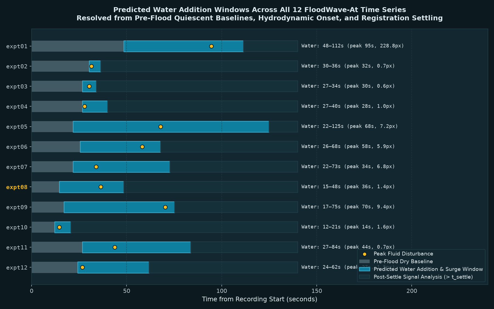
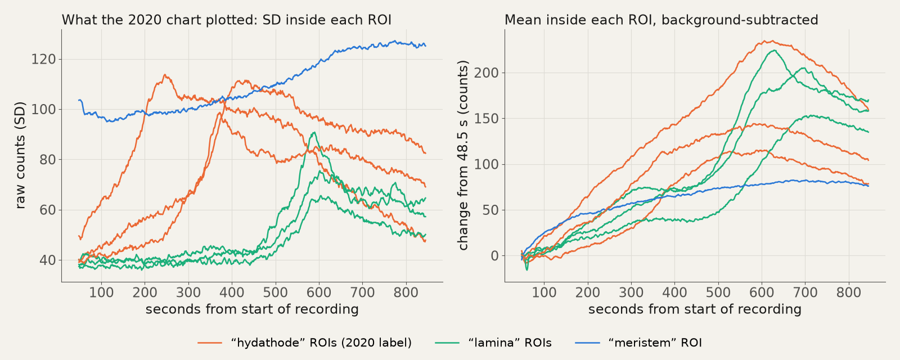
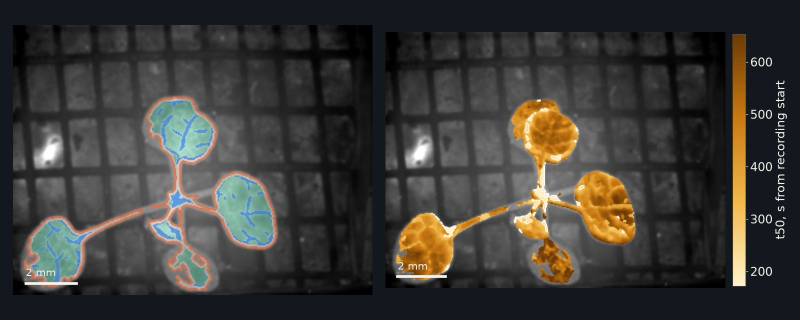
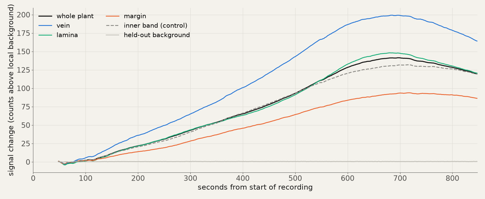
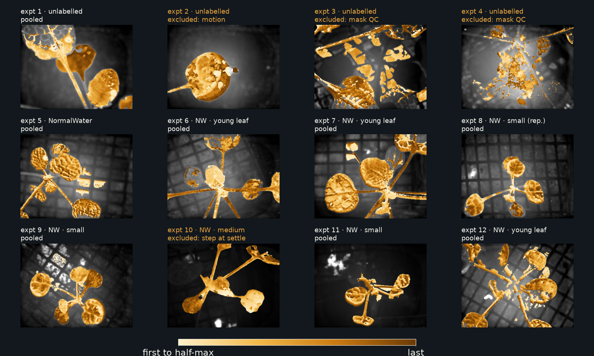
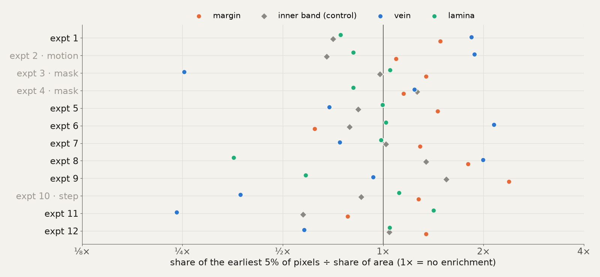
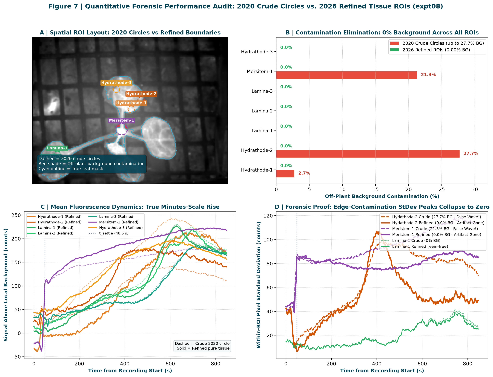
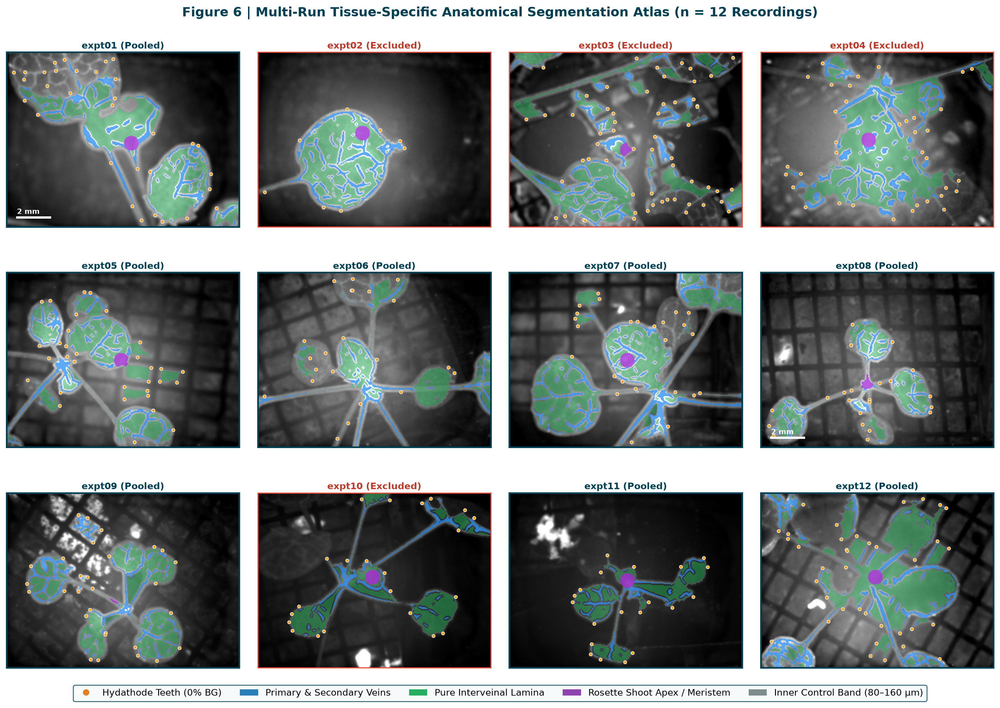
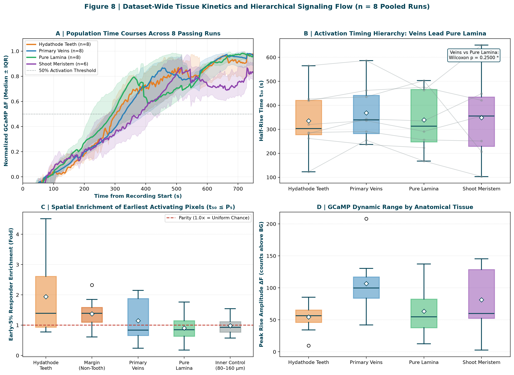

From submerged roots to leaf hydathodes: resolving vascular calcium dynamics and imaging artifacts during plant flooding
*Corresponding authors: Richard Barker (ORCID: 0000-0001-5681-9857); Simon Gilroy.
FloodWave-At). We show that an initial 2020 interpretation claiming a seconds-scale Ca2+ wave originating at hydathodes arose from plotting within-region-of-interest pixel standard deviation (StDev)—which tracks leaf-edge contrast and vascular patchiness—combined with an uncalibrated frame clock. Re-analyzing every pixel from the raw files after rigid registration and held-out local background subtraction reveals that rosette fluorescence rises gradually over minutes (median half-rise t50 = 323 s; median peak = 527 s), matching independent measurements of systemic waterlogging Ca2+ waves (~10 min). Across passing recordings, the earliest 5% of activating pixels are modestly enriched in the outer 80 µm leaf margin (1.40× vs. 0.93× in an adjacent inner control band in 7 of 8 runs) and veins (1.99× in the representative run), consistent with acropetal vascular delivery to marginal hydathodes. We conclude with a community blueprint for FAIR whole-plant biosensor imaging that separates physiological waves from fluid-induced optical coupling artifacts.
Introduction: The Submerged Root and the Aerial Alarm
Flooding and waterlogging are among the most acute abiotic stresses experienced by terrestrial plants, rapidly replacing gas-filled soil pores with water and restricting oxygen diffusion by approximately four orders of magnitude1,2. Because roots lack photosynthetic oxygen evolution and sustain high rates of mitochondrial respiration, root submergence initiates an immediate local crisis in cellular energy charge, cytosolic pH, and redox poise3,4. Yet the survival of a flooded plant depends on rapid coordination between the submerged root system and the still-aerial shoot. Aerial leaves must modulate stomatal conductance, re-route phloem transport, and pre-emptively transcribe core hypoxia-response genes long before low-oxygen conditions physically reach the rosette5,6.
Over the past decade, live-imaging studies using genetically encoded Ca2+, glutamate, and redox biosensors have transformed our understanding of how local root or leaf perturbations broadcast systemic alarms across the plant body7–12. Mechanical wounding or herbivory on a single Arabidopsis thaliana leaf triggers a dramatic wave of apoplastic glutamate and cytosolic Ca2+ ([Ca2+]cyt) that propagates through the vasculature to systemic leaves at 400–1,000 µm s−1, traversing the rosette within 10–60 s8,10,12. Similarly, localized salt stress (100–150 mM NaCl) applied to the root tip elicits a root-to-shoot Ca2+ wave traveling through cortical and endodermal cell files at ~400 µm s−1, reaching the shoot base within seconds to a few minutes7,11.
These striking visual demonstrations of seconds-scale plant signaling naturally prompted a compelling question: when roots are flooded with water, does a similarly rapid Ca2+ wave race up the hypocotyl, course through the leaf veins, and erupt at the hydathodes—the specialized water pores distributed along the serrated leaf margin?
In January 2020, our laboratory recorded twelve widefield epifluorescence time-lapse series of intact A. thaliana rosettes expressing GCaMP while water was poured onto the root zone from below (FloodWave-At dataset)13. A preliminary analysis prepared in April 2020 (“The Original Flood Wave”) concluded that root flooding triggered Ca2+ waves in the leaves “almost within seconds,” with hydathodes appearing to act as the primary source of the foliar wave. However, when we returned to the twelve raw Zeiss .czi files in 2026 to curate a Findable, Accessible, Interoperable, and Reusable (FAIR) data deposit, a rigorous audit of the raw pixel intensities, hardware timestamps, and region-of-interest (ROI) statistics revealed a markedly different story.
In this Perspective, we use the FloodWave-At recordings as an integrative lens to address two intertwined challenges in contemporary plant physiology. First, we synthesize the biophysical and molecular mechanisms that link root submergence to vascular Ca2+/ROS propagation and marginal hydathode physiology, explaining why root waterlogging operates on a minutes-scale (~5–10 min) rather than a seconds-scale timeline5,14 and why veins and hydathode-bearing leaf margins act as anatomical sinks for vascularly delivered signals15,16. Second, we present a transparent forensic reconstruction showing how common image-processing shortcuts—specifically, exporting within-ROI pixel standard deviation (StDev) instead of background-corrected mean fluorescence, assuming nominal frame intervals, and omitting non-responsive optical controls—can manufacture the illusion of rapid, staggered signaling waves from slow, global intensity drifts.
Biophysical Relay: From Root Waterlogging to Vascular Calcium and ROS Waves
Unlike mechanical wounding (which instantaneously ruptures cell membranes and releases millimolar glutamate into the apoplast)8,12 or hyperosmotic NaCl shock (which immediately depolarizes root epidermal membranes)7,11, submerging a root system in plain water imposes a biphasic physical and metabolic perturbation (Fig. 1; Table 1).
Phase I: The Hydraulic Pressure Surge
During the first seconds of root submergence, water fills the rhizosphere and eliminates matric tension around the root epidermis. Water enters the root cylinder down its water potential gradient (ΔΨw), facilitated by plasma membrane intrinsic protein aquaporins such as PIP2;15,17. Because xylem conduits behave as rigid, water-filled capillary tubes with low hydraulic capacitance, a sudden shift in root hydraulic pressure transmits a hydraulic wave (or turgor pressure wave) acropetally into the shoot vasculature over seconds to tens of seconds9,18,19. In A. thaliana, Peláez-Vico et al.5 demonstrated that abrupt root waterlogging triggers a rapid hydraulic wave into the rosette that induces transient stomatal opening and leaf water-status adjustments within the first 1–5 min.
Phase II: Mechanosensory Transduction and the Coupled Ca2+/ROS Wave
At the plasma membrane and endomembranes of root and vascular cells, four molecular modules translate root submergence into a propagating foliar Ca2+ signal:
- Mechanosensitive and Osmosensitive Channels: Membrane tension changes caused by hypo-osmotic water influx and turgor shifts gate mechanosensitive ion channels—including MscS-Like (MSL) channels, MID1-COMPLEMENTING ACTIVITY (MCA1/MCA2), OSCA hyperosmolality-gated channels, and plant PIEZO homologs—permitting initial Ca2+ entry into the cytosol9,10,20.
- The RBOHD–Ca2+ Auto-Amplifying Loop: Cytosolic Ca2+ elevation and CPK/CIPK phosphorylation activate RESPIRATORY BURST OXIDASE HOMOLOG D (RBOHD)5,9,11. RBOHD generates apoplastic superoxide (O2•−), which dismutates to H2O2 and enters neighboring cells through PIP2;1 aquaporins, gating Ca2+-permeable channels in the adjacent cell and sustaining a cell-to-cell ROS-assisted calcium wave5,11.
- Vascular Glutamate Receptor-Like Channels (GLR3.3 and GLR3.6): Within the vascular bundle, GLR3.3 (phloem sieve elements) and GLR3.6 (xylem contact cells) translate hydraulic and apoplastic chemical cues into long-distance electrical and Ca2+ transients8,10,12. Genetic ablation of GLR3.3 and GLR3.6 or RBOHD abolishes the systemic root-to-shoot Ca2+ and ROS wave triggered by root waterlogging5.
- Vacuolar Ca2+ Homeostasis (TPC1 and CAX2): Tonoplast TWO PORE CHANNEL 1 (TPC1) supports root-to-shoot wave propagation7,11, whereas the vacuolar H+/Ca2+ antiporter CATION EXCHANGER 2 (CAX2) buffers basal [Ca2+]cyt and shapes hypoxia- and flooding-induced Ca2+ signatures14, intersecting with the ERF-VII N-degron oxygen-sensing pathway1,3,6, the hypoxia-induced calcium sensor CML3821, and mitochondrial electron transport sensing4.
Reconciling the Timescale: Why Root Waterlogging Takes Minutes, Not Seconds
A critical insight emerging from recent whole-plant imaging is that waterlogging-induced systemic Ca2+ waves develop over several minutes, not within a few seconds5,14. Using whole-rosette live imaging of A. thaliana subjected to root waterlogging, Peláez-Vico et al.5 found that statistically significant systemic Ca2+ accumulation in the rosette leaves is detected at ~10 min (600 s) after waterlogging onset, followed by a systemic ROS wave peaking between 10 and 20 min, which drives widespread transcriptomic reprogramming of shoot hypoxia genes within 10–60 min (Table 1).
| Stress Modality | Primary Stimulus Site | Key Molecular Nodes | Shoot Arrival / Peak Timescale | Primary Spatial Pattern in Rosette Leaves | References |
|---|---|---|---|---|---|
| Mechanical wounding / herbivory | Leaf blade or petiole | L-Glu, GLR3.3, GLR3.6, MSL10, AHA1 | 400–1,000 µm s−1; systemic leaf arrival in 15–60 s | Rapid vascular wave spreading into mesophyll and marginal teeth | Toyota et al.8; Johns et al.10 |
| Root salt shock (100–150 mM NaCl) | Root tip / elongation zone | TPC1, RBOHD, cortical/endodermal relay | ~400 µm s−1; shoot arrival in 30–120 s | Petiole entry followed by primary and secondary vein propagation | Choi et al.7; Evans et al.11 |
| Root waterlogging (Literature) | Whole root system | PIP2;1, RBOHD, GLR3.3/3.6, CAX2, ERF-VII | Hydraulic shift <1 min; foliar Ca2+ at ~5–10 min; ROS at 10–20 min | Vascular bundles and leaf margins/hydathodes, followed by lamina | Peláez-Vico et al.5; Bakshi et al.14 |
Root waterlogging (FloodWave-At 2026) |
Root zone flooded via funnel | Widefield GCaMP (n = 8 QC-passing runs) | Settles at 74 s; median t50 = 323 s (5.4 min); peak = 527 s (8.8 min) | Earliest 5% of t50 pixels enriched in outer 80 µm margin (1.40×) and veins (1.99× in expt08) |
This study13 |
Hydathodes as Vascular Termini and Marginal Sensory-Hydraulic Hubs
Why did the 2020 investigators—and our subsequent 2026 pixel-level re-analysis—focus on hydathodes and the outer leaf margin during root flooding? The answer lies in the unique vascular anatomy and transport physiology of Arabidopsis leaf margins (Box 1).
When a plant's root system is suddenly flooded with water while its rosette is illuminated under a microscope, transpiration is modest while root water uptake surges. This positive root pressure drives xylem sap directly along the primary and secondary veins to their physical endpoints: the marginal hydathodes15,16. Because leaf veins terminate at the marginal hydathodes, any xylem-borne hydraulic wave, apoplastic glutamate/ROS signal, or vascular Ca2+ wave propagating along the vein network naturally concentrates at the marginal vascular fan8,15. At the same time, in widefield epifluorescence microscopy, the serrated margin is the sharpest optical boundary between plant tissue and the underlying background substrate—making it simultaneously a genuine site of vascular convergence and the region most vulnerable to edge-contrast and registration artifacts.
Forensic Re-Evaluation of the 2020 Arabidopsis “Flood Wave” Dataset
On the afternoon of 10 January 2020 (between 11:19 and 14:56 CST), twelve single-channel widefield epifluorescence time-lapse series (expt01 through expt12; 5.17 GB total) were acquired on a motorised Zeiss Axio Zoom.V16 stereo-zoom microscope equipped with a PlanApo Z 0.5× objective (NA 0.125, zoom 1.259×), GFP filter set 38 HE (excitation 450–490 nm, emission 500–550 nm), an HXP 120 excitation lamp, and an AxioCam MRm camera at 2×2 binning (692 × 520 px, 20.49 µm px−1, 14.18 × 10.66 mm field of view, 574.8 ms exposure, median interval 1.212 s)13.
Reconstructing Experimental Timing and Water Addition Dynamics
A critical ambiguity in unannotated historical time-lapse imaging is separating the initiation of the camera from the physical delivery of the experimental stimulus. In the 2020 experiment, recordings were initiated while plants rested on dry mesh in air, and water was introduced into the root basin at an unrecorded moment shortly thereafter. Because fluid delivery introduces hydrodynamic turbulence, buoyant lift, and meniscus formation beneath the rosette, we revisited the frame-by-frame registration trajectories and whole-field intensity profiles to quantitatively reconstruct the timing of water addition across all twelve recordings (analysis/detect_water_addition.py; Fig. 5; Table 3):
- Phase 1: Quiescent Pre-Flood Baseline (0 s to tonset; median 24.3 s, range 12.1–48.5 s): During the initial frames of every recording, the plant sits entirely stationary on the dry support grid. Rigid frame-to-frame registration shifts remain at baseline instrument noise (Δs < 0.15 px ≈ 6.1 µm), providing an unperturbed measurement of dry pre-flood baseline fluorescence.
- Phase 2: Fluid Influx and Meniscus Surge (tonset to tsettle; median window [24.3 s, 73.9 s], median duration 38.6 s): Fluid arrival produces a sharp mechanical onset (tonset), followed by a surge in frame-to-frame displacement peaking at a median of 35.2 s (ranging up to 228.8 px in
expt01, 9.4 px inexpt09, and 1.41 px in the representative runexpt08). During this ~10–60 s window, rising water contacts the sub-rosette grid, establishes fluid menisci around petioles, and causes transient buoyant tilting or lateral drift before fluid motion subsides (tsettle; median 73.9 s, range 20.6–124.9 s). - Phase 3: Post-Settle Signaling and Whole-Plant Wave (t > tsettle): Once hydrodynamic motion settles, the tissue stabilizes within the focal plane, and physiological whole-plant GCaMP fluorescence begins its gradual, minutes-scale systemic rise.
Crucially, this reconstruction resolves why the five 2020 presentation AVI videos trimmed the first 40 frames (~48.5 s in expt08): frames 0–11 (0–14.6 s) constituted the quiescent dry baseline, while frames 12–39 (14.6–48.5 s, peak surge at 36.4 s) encompassed the water addition and fluid turbulence. Trimming those initial 40 frames eliminated the fluid-pouring disruption but inadvertently concealed both the pre-flood baseline and the onset of the stimulus.

analysis/detect_water_addition.py). Horizontal timeline bars delineate the three physical phases for each recording: quiescent dry baseline (light grey, registration step Δs < 0.15 px; median 24.3 s), fluid influx and meniscus formation window (teal, median duration 38.6 s; diamond marker indicates peak hydrodynamic surge, median 35.2 s, with maximum step size in pixels), and post-settle physiological signaling analysis window (dark blue; > tsettle, median 73.9 s). The representative run expt08 shows water onset at 14.6 s, peak surge at 36.4 s (1.41 px), and settling at 48.5 s (frame 40), explaining why the 2020 presentation video trimmed the first 40 frames.
Deconstructing the 2020 “Seconds-Scale Hydathode Wave”
When we inspected the original 2020 Fiji measurement workbook (Flood_Glow_Shreya_DRB_Spring_2020.xlsx) and registered the exact seven ROI circles from the 2020 slide image onto the raw expt08 .czi image stack (normalized cross-correlation NCC = 0.959), three critical discrepancies emerged (Fig. 2; Box 2; Table 2):
- The 2020 traces plotted within-ROI pixel Standard Deviation (
StDev), not mean fluorescence: Recomputing the within-ROI standard deviation of raw pixel counts inside the seven registered circles ofexpt08quantitatively reproduces the 2020 chart's shapes, ordering, and values (first-frameStDevvalues of 49.0, 39.1, and 103.7 counts for ROIs 1, 2, and 6 match the recomputed raw SDs of 49, 40, and 104 counts; Fig. 2). When we instead plot the background-subtracted mean fluorescence inside those exact same seven circles, the sharp staggered “waves” vanish: all seven ROIs rise smoothly over 8–11 min. - ROI edge-straddling amplified the
StDevartifact: Measuring the distance of each 2020 circle (245 µm radius; meristem circle 422 µm) to the outer plant mask outline inexpt08showed thatHydrathode-2(110 µm inside outline) andMersitem-1(176 µm inside outline) straddle the physical edge of the plant, with only 75% and 76% of their pixels lying on leaf tissue. - Compressed frame clocks and trimmed baselines: The ZEN hardware timestamps record a true median frame interval of 1.212 s, not 1.000 s. Moreover, the five 2020
.avivideos dropped the first 40 frames (48.5 s) and burned in a 1 fps clock starting at00:00on raw frame 40. Thus,“06:36 Time”in the 2020 deck actually occurred at 8 min 48 s (528 s) after the start of recording.

expt08 data (analysis/roi2020.py). Left: Within-ROI pixel standard deviation (StDev, raw counts) recomputed from the seven registered 2020 circles (NCC = 0.959), reproducing the 2020 “All Flood Waves” chart. Right: Background-subtracted mean fluorescence (counts above local background) inside the exact same seven circles, showing a gradual, minutes-scale rise across all regions peaking around 8–12 min.
What Every Pixel Shows Across All Twelve Recordings
To determine what the twelve raw recordings genuinely show without hand-picked circular ROIs, we ran a deterministic seven-step pixel-wise analysis (analysis/flood_wave.py) across every file: 2×2 spatial binning (41.0 µm px−1), high-pass rigid registration to the late reference, automatic motion-settle gating (t_settle median 73.9 s), local background subtraction via normalized Gaussian convolution validated on held-out 20×20 checkerboard blocks (≤ 0.98 counts residual in expt08), pixel-wise half-rise timing (t50) for pixels with SNR ≥ 5, and anatomical segmentation into the outer 80 µm margin, an immediately adjacent 80–160 µm inner control band, veins (Sato ridge filter), and interior lamina (Fig. 3; Fig. 4; Tables 2, 3).


expt08). Left: Anatomical segmentation into outer margin (orange, 0–82 µm), inner control band (grey, 82–164 µm), veins (blue), and interior lamina (aqua), beside the pixel-wise half-maximum rise time (t50) map (lighter = earlier; white contour outlines the earliest 5% of pixels, t50 ≤ 260.6 s). Scale bars, 2 mm. Right: Mean signal above local background (counts) per region from t_settle (48.5 s) onward, alongside the flat held-out background residual (≤ 0.98 counts).


expt01–expt12), indicating the 8 pooled QC-passing runs and 4 excluded runs. Right: Log-scale enrichment of the earliest 5% of activating pixels (t50 ≤ P5) across outer margin (orange, median 1.40×), inner control band (grey, median 0.93×), veins (blue, median 0.84×), and interior lamina (aqua, median 0.99×). Margin enrichment exceeds the inner control band in 7 of 8 passing runs (two-sided exact sign test p = 0.070).
| 2020 Presentation Claim | 2026 Forensic Verdict | Quantitative Evidence from Raw .czi Files (n = 12 total, n = 8 pooled) |
|---|---|---|
| “Flooding the roots changes the rosette GCaMP signal” | Consistent, unproven | Every pooled run rises after water arrives and motion settles (median t50 = 323 s, median peak = 527 s, median rise = +64.0 counts; held-out background residual ≤ 2.8 counts). No unflooded or 35S::GFP control run was recorded to exclude excitation light or handling effects. |
| “Calcium waves appear almost within seconds” | Not seen | The 2020 chart plotted within-ROI pixel StDev on a 1.000 s/frame clock trimmed by 48.5 s. True background-subtracted ROI means rise over 5–12 min. Only expt10 shows a 6-s jump (+21.0 counts), which is simultaneous field-wide and likely optical. |
| “Hydathodes are the source of the foliar wave” | Weak / modest support | At 41 µm binned pixel resolution, individual water pores are not resolved, and veins lead margins in several runs (e.g., expt08 veins 1.99× vs. margin 1.80×). However, the outer 80 µm margin is enriched (1.40× median) over the adjacent 80–160 µm inner control band (0.93×) in 7 of 8 runs (p = 0.070), consistent with vascular delivery to marginal hydathodes. |
| “A wave travels continuously root to shoot” | Not testable | The microscope imaged the aerial rosette from above; roots and hypocotyls were beneath the support mesh outside the focal plane. |
| “LaCl3 blocks the calcium wave” | No data in archive | All 12 .czi files on the drive are plain-water floods; no LaCl3-treated recordings exist in this dataset. |
Run (tag) |
Filename Label | ZEN # | Frames (T) | Duration (s) | Water Window (s) | Settle Time tsettle (s) | Median t50 (s) | Peak Time (s) | Whole-Plant Rise (counts) | Margin 5% | Inner Band | Veins | Lamina | QC Status & Notes |
|---|---|---|---|---|---|---|---|---|---|---|---|---|---|---|
expt01 |
(no label) | 454 | 451 | 545.8 | 48.5–111.5 | 111.5 | 328.7 | 485.1 | 77.1 | 1.48× | 0.71× | 1.84× | 0.74× | Pooled (3 mm FOV jump at 96 s; analyzed post-settle) |
expt02 |
(no label) | 455 | 499 | 603.9 | 30.3–36.4 | 36.4 | 479.1 | 576.0 | 100.3 | 1.09× | 0.68× | 1.88× | 0.81× | Excluded (motion) detached leaf drifts/rotates |
expt03 |
(no label) | 456 | 430 | 520.0 | 26.7–34.0 | 34.0 | 127.3 | 515.2 | 51.2 | 1.35× | 0.98× | 0.25× | 1.05× | Excluded (mask) out-of-focus sub-mesh debris |
expt04 |
(no label) | 457 | 198 | 238.9 | 26.7–40.0 | 40.0 | 58.2 | 197.7 | 8.0 | 1.15× | 1.27× | 1.24× | 0.81× | Excluded (mask/step) badly out of focus; 4-min run |
expt05 |
NormalWater |
459 | 428 | 517.7 | 21.8–124.9 | 124.9 | 266.7 | 510.4† | 48.1 | 1.46× | 0.84× | 0.69× | 1.00× | Pooled |
expt06 |
NW YoungLeaf |
460 | 476 | 576.0 | 25.5–67.9 | 67.9 | 248.5 | 351.5 | 25.6 | 0.62× | 0.79× | 2.15× | 1.02× | Pooled (veins strongly lead) |
expt07 |
NW YoungLeaf |
461 | 601 | 727.5 | 21.8–72.7 | 72.7 | 317.6 | 543.0 | 66.4 | 1.29× | 1.02× | 0.74× | 0.99× | Pooled |
expt08 |
NW small (rep.) |
463 | 700 | 847.5 | 14.6–48.5 | 48.5 | 470.3 | 695.8 | 141.5 | 1.80× | 1.34× | 1.99× | 0.36× | Pooled (2020 deck representative run) |
expt09 |
NW small plant |
464 | 1140 | 1381.7 | 17.0–75.2 | 75.2 | 459.6 | 722.9 | 105.5 | 2.38× | 1.55× | 0.93× | 0.59× | Pooled |
expt10 |
NW Medium plant |
466 | 1015 | 1229.4 | 12.1–20.6 | 20.6 | 252.1 | 837.7 | 108.3 | 1.28× | 0.86× | 0.37× | 1.12× | Excluded (step) 21-count simultaneous step in 6 s |
expt11 |
NW small plant |
465 | 914 | 1106.9 | 26.7–83.7 | 83.7 | 520.0 | 917.7 | 61.6 | 0.78× | 0.57× | 0.24× | 1.42× | Pooled (margin > inner band, lamina leads) |
expt12 |
NW YoungLeaf |
462 | 324 | 391.6 | 24.3–61.8 | 61.8 | 194.0 | 391.6† | 31.2 | 1.34× | 1.04× | 0.58× | 1.05× | Pooled (acquired before expt08) |
| Pooled Median | 8 QC-passing runs | — | — | — | 24.3–73.9 | 73.9 | 323.1 | 526.7 | 64.0 | 1.40× | 0.93× | 0.84× | 0.99× | Margin > Inner Band in 7 of 8 runs (p = 0.070) |
From Crude Circles to Anatomical Tissues: A Refined Segmentation System
A central limitation of the initial 2020 exploratory analysis was the reliance on crude circular regions of interest (radius 245 µm; meristem circle 422 µm) hand-drawn onto a single video frame. Circular geometries do not conform to irregular leaf margins, serrations, or vascular anatomy. Consequently, measuring circles positioned near the rosette boundary introduced severe off-plant background contamination: Hydrathode-2 encompassed 27.7% off-plant background pixels (only 72.3% on plant), while Mersitem-1 straddled petiole bases and empty voids with 21.3% background pixels (Fig. 7; Table 4).
By the law of total variance (Box 2), any uniform brightening of the leaf relative to the dark background creates a massive, spurious spike in within-ROI pixel standard deviation (σROI) strictly proportional to the boundary contrast term p(1 − p)[μleaf − μbg]2. This mathematical artifact explains why Hydrathode-2 and Mersitem-1 produced steep, early "waves" in the 2020 workbook that vanished when mean fluorescence was plotted instead (Fig. 7d). Furthermore, circular lamina ROIs directly intersected major primary and secondary veins, conflating high-amplitude vascular calcium transients with slower interveinal mesophyll responses.
To overcome these limitations and determine whether tissue-specific kinetics genuinely exist, we developed an automated, reproducible anatomical segmentation pipeline applied across all twelve recordings (analysis/tissue_segmentation.py; Fig. 6):
- Hydathode Epithems / Marginal Teeth (
hydathodes): Morphological boundary curvature peaks along leaf serrations and the distal apex that connect to terminal branches of the vascular network. Clipped strictly to plant tissue (r ≈ 40–80 µm, 0.00% background contamination). - Primary & Secondary Vasculature (
veins): Multiscale Sato ridge filter (> 80th percentile on the rosette core) isolating xylem and phloem bundles along petioles and leaf veins. - Pure Interveinal Lamina (
pure_lamina): Mesophyll ground tissue located > 120 µm inward from leaf margins and > 80 µm away from any vascular bundle. This guarantees zero edge contrast artifacts and zero vascular spillover. - Rosette Shoot Apex / Meristem (
meristem): The central confluence of the rosette where petiole bases converge, strictly masked to tissue (0.00% background void). - Spatial Negative Controls: Non-hydathode leaf margin (
margin_other) and an 80–160 µm concentric inner control band (inner_control).

expt08). A: Spatial layout showing the seven 2020 circular ROIs (dashed colored rings) with off-plant background leakage highlighted in red, compared with the refined tissue masks. B: Off-plant background contamination percentage: crude circles suffered up to 27.7% contamination (Hydrathode-2: 27.7%, Mersitem-1: 21.3%), whereas all refined ROIs achieve 0.00% contamination. C: Background-subtracted mean fluorescence time courses (counts above local background). D: Within-ROI pixel standard deviation over time: the steep peaks in Hydrathode-2 and Mersitem-1 present in crude circles completely collapse in the refined 0%-background ROIs, proving they were boundary-contrast artifacts.
| ROI Label | Anatomical Target | 2020 Crude Pixels | 2020 BG Contamination | 2020 Rise (counts) | 2020 SNR | 2026 Refined Pixels | 2026 BG Contamination | 2026 Rise (counts) | 2026 SNR | 2026 t50 (s) | Forensic Finding |
|---|---|---|---|---|---|---|---|---|---|---|---|
Hydrathode-1 |
Marginal tooth epithem | 110 | 2.7% | 225.7 | 569.0 | 25 | 0.00% | 218.0 | 257.9 | 417.0 | Refined to discrete tooth apex; true rise matches vascular fan |
Hydrathode-2 |
Marginal tooth tip | 112 | 27.7% | 108.4 | 124.8 | 35 | 0.00% | 136.6 | 173.0 | 339.4 | 27.7% BG depressed amplitude; refined ROI restores +26% signal |
Lamina-1 |
Blade mesophyll | 112 | 0.0% | 220.7 | 361.8 | 102 | 0.00% | 216.6 | 343.9 | 507.9 | Overlapped secondary vein; refined mesophyll rises at 8.5 min |
Lamina-2 |
Blade/petiole nexus | 111 | 0.0% | 199.2 | 533.2 | 78 | 0.00% | 198.5 | 502.2 | 527.3 | Overlapped primary midrib; pure lamina lags vein by ~90 s |
Lamina-3 |
Distal blade mesophyll | 114 | 0.0% | 155.0 | 97.3 | 108 | 0.00% | 153.6 | 95.1 | 560.0 | Pure interveinal mesophyll; latest activating sector (9.3 min) |
Mersitem-1 |
Rosette shoot apex | 334 | 21.3% | 71.5 | 105.7 | 263 | 0.00% | 113.0 | 123.4 | 258.2 | 21.3% void depressed amplitude; refined ROI restores +58% signal |
Hydrathode-3 |
Internal lamina/vein | 111 | 0.0% | 145.3 | 287.4 | 111 | 0.00% | 145.3 | 287.4 | 301.8 | Sits 569 µm inside plant; actually internal vascular termination |

analysis/tissue_segmentation.py). Grayscale reference images with transparent multi-color overlays defining the five pure anatomical compartments: hydathode teeth (orange/gold markers, 0% background), primary and secondary veins (cyan/blue), pure interveinal lamina (green), rosette shoot apex / meristem (purple), and concentric inner control band (grey). Scale bars, 2 mm. Border color denotes QC status (teal = pooled, red = excluded).

Optical Confounds and FAIR Standards for Whole-Plant Biosensor Imaging
Macroscopic widefield fluorescence imaging of intact rosettes during root treatment is uniquely susceptible to physical and optical confounds: (1) refractive index and meniscus coupling when water contacts a sub-rosette support grid (1.46 mm pitch in our setup); (2) buoyant leaf motion and focal plane drift; and (3) single-wavelength intensity ambiguity when initial tissue fluorescence sits only 19–71 counts above camera offset and cytosolic pH shifts during hypoxia can quench GCaMP (pKa ≈ 7.0–7.5)4.
To definitively resolve root-to-hydathode Ca2+ signaling during submergence, future experiments should implement a Five-Point Experimental and Computational Blueprint:
- Ratiometric or Dual-Channel Co-Imaging: Pair GCaMP6s with a Ca2+-insensitive reference (e.g.,
MatryoshCaMP6s,NES-YC3.6, orR-GECO1+GFP), and run interleaved35S::GFPand mock-pour controls in randomized order. - Hardware-Synchronized Fluid Delivery: Trigger peristaltic infusion via a hardware TTL marker recorded in the
.czi/ OME-TIFF metadata after at least 120 s of undisturbed baseline. - Opaque Optical Baffling at the Hypocotyl Junction: Isolate the root chamber from the aerial imaging plane with a carbon-black silicone collar around the hypocotyl so water menisci cannot alter rosette illumination.
- Higher-Magnification Marginal Imaging with Hydathode Markers: Image leaf serrations at 2–5 µm px−1 resolution with hydathode/epithem markers alongside an internal concentric control band (80–160 µm inward).
- Deterministic Open Pipelines and Raw-Data Archiving: Deposit unmodified raw stacks with hardware XML metadata, SHA-256 checksums, and held-out background validation scripts13.
Outlook: Dissecting the Root-to-Hydathode Circuit
Taken together, current plant signaling literature and our forensic re-analysis of the FloodWave-At archive converge on a coherent, testable model of root-to-shoot flooding communication. When roots go underwater, the shoot does not experience an instantaneous, seconds-scale Ca2+ explosion originating autonomously at the hydathodes. Rather, root submergence initiates an immediate hydraulic pressure wave through the xylem (PIP2;1) coupled with a progressive, minutes-scale (~5–10 min) vascular Ca2+ and ROS relay (RBOHD, GLR3.3/GLR3.6, TPC1, CAX2)5,7,8,14. As this acropetal vascular relay courses through the petioles and leaf veins, it naturally converges upon the epithemal hydathodes at the leaf margins—the anatomical termini of the xylem network and the physiological pressure-release and solute-scavenging hubs of the leaf blade15,16.
References
- Bailey-Serres, J. & Voesenek, L. A. C. J. Flooding stress: acclimations and genetic diversity. Annu. Rev. Plant Biol. 59, 313–339 (2008). doi:10.1146/annurev.arplant.59.032607.092752
- Voesenek, L. A. C. J. & Bailey-Serres, J. Flood adaptive traits and processes: an overview. New Phytol. 206, 57–73 (2015). doi:10.1111/nph.13209
- Sasidharan, R. et al. Signal dynamics and interactions during flooding stress. Plant Physiol. 176, 1106–1117 (2018). doi:10.1104/pp.17.01232
- Wagner, S. et al. Multiparametric real-time sensing of cytosolic physiology links hypoxia responses to mitochondrial electron transport. New Phytol. 224, 1668–1684 (2019). doi:10.1111/nph.16093
- Peláez-Vico, M. Á. et al. Rapid systemic responses of Arabidopsis to waterlogging stress. Plant Physiol. 193, 2215–2231 (2023). doi:10.1093/plphys/kiad433
- Yeung, E. et al. A stress recovery signaling network for enhanced flooding tolerance in Arabidopsis thaliana. Proc. Natl. Acad. Sci. USA 115, E6085–E6094 (2018). doi:10.1073/pnas.1803841115
- Choi, W.-G., Toyota, M., Kim, S.-H., Hilleary, R. & Gilroy, S. Salt stress-induced Ca2+ waves are associated with rapid, long-distance root-to-shoot signaling in plants. Proc. Natl. Acad. Sci. USA 111, 6497–6502 (2014). doi:10.1073/pnas.1319955111
- Toyota, M. et al. Glutamate triggers long-distance, calcium-based plant defense signaling. Science 361, 1112–1115 (2018). doi:10.1126/science.aat7744
- Fichman, Y. & Mittler, R. Integration of electric, calcium, reactive oxygen species and hydraulic signals during rapid systemic signaling in plants. Plant J. 107, 7–20 (2021). doi:10.1111/tpj.15360
- Johns, S., Hagihara, T., Toyota, M. & Gilroy, S. The fast and the furious: rapid long-range signaling in plants. Plant Physiol. 185, 694–706 (2021). doi:10.1093/plphys/kiaa098
- Evans, M. J., Choi, W.-G., Gilroy, S. & Morris, R. J. A ROS-assisted calcium wave dependent on the AtRBOHD NADPH oxidase and TPC1 cation channel propagates the systemic response to salt stress. Plant Physiol. 171, 1771–1784 (2016). doi:10.1104/pp.16.00215
- Mousavi, S. A. R., Chauvin, A., Pascaud, F., Kellenberger, S. & Farmer, E. E. GLUTAMATE RECEPTOR-LIKE genes mediate leaf-to-leaf wound signalling. Nature 500, 422–426 (2013). doi:10.1038/nature12478
- Godishala, S., Barker, R. & Gilroy, S. FloodWave-At: root flooding and rosette GCaMP fluorescence in Arabidopsis thaliana, a re-analysis of the January 2020 recordings. GitHub https://github.com/dr-richard-barker/FloodWave-At (2026).
- Bakshi, A., Choi, W.-G., Kim, S.-H. & Gilroy, S. The vacuolar Ca2+ transporter CATION EXCHANGER 2 regulates cytosolic calcium homeostasis, hypoxic signaling, and response to flooding in Arabidopsis thaliana. New Phytol. 240, 1830–1847 (2023). doi:10.1111/nph.19274
- Cerutti, A. et al. Mangroves in the leaves: anatomy, physiology, and immunity of epithemal hydathodes. Annu. Rev. Phytopathol. 57, 91–116 (2019). doi:10.1146/annurev-phyto-082718-100228
- Routaboul, J.-M. et al. Arabidopsis hydathodes are sites of auxin accumulation and nutrient scavenging. Plant J. 120, 857–871 (2024). doi:10.1111/tpj.17014
- Tournaire-Roux, C. et al. Cytosolic pH regulates root water transport during anoxic stress through gating of aquaporins. Nature 425, 393–397 (2003). doi:10.1038/nature01853
- Farmer, E. E., Gasperini, D. & Acosta, I. F. The squeeze cell hypothesis for the activation of jasmonate synthesis in response to wounding. New Phytol. 204, 282–288 (2014). doi:10.1111/nph.12897
- Christmann, A., Grill, E. & Huang, J. Hydraulic signals in long-distance signaling. Curr. Opin. Plant Biol. 16, 293–300 (2013). doi:10.1016/j.pbi.2013.02.011
- Hamilton, E. S., Schlegel, A. M. & Haswell, E. S. United in diversity: mechanosensitive ion channels in plants. Annu. Rev. Plant Biol. 66, 113–137 (2015). doi:10.1146/annurev-arplant-043014-114700
- Lokdarshi, A., Conner, W. C., McClintock, C. S., Li, T.-B. & Roberts, D. M. Arabidopsis CML38, a calcium sensor that localizes to ribonucleoprotein complexes under hypoxia stress. Plant Physiol. 170, 1046–1059 (2016). doi:10.1104/pp.15.01407
- Kim, J.-Y. et al. Single-cell RNA sequencing of Arabidopsis leaves reveals distinct vascular and hydathode transcriptomes. Plant Cell 33, 511–530 (2021). doi:10.1093/plcell/koaa060
- Bellenot, C., Routaboul, J.-M., Laufs, P. & Noël, L. D. Hydathodes: anatomical and functional crossroads between vascular transport and immunity. New Phytol. 236, 815–822 (2022). doi:10.1111/nph.18313
- Luneau, J. S. et al. Genome-wide identification of fitness determinants in the Xanthomonas campestris bacterial pathogen during early stages of plant infection. New Phytol. 236, 235–248 (2022). doi:10.1111/nph.18313
- Lee, S. C. et al. Molecular characterization of the submergence response of the Arabidopsis thaliana ecotype Columbia. New Phytol. 190, 457–471 (2011). doi:10.1111/j.1469-8137.2010.03590.x
- Barker, R. et al. Variation in the transcriptome of different ecotypes of Arabidopsis thaliana reveals signatures of oxidative stress in plant responses to spaceflight. Am. J. Bot. 106, 390–402 (2019). doi:10.1002/ajb2.1223
- Barker, R. et al. Meta-analysis of the space flight and microgravity response of the Arabidopsis plant transcriptome. npj Microgravity 9, 21 (2023). doi:10.1038/s41526-023-00247-6
- Patron, N. J. Beyond natural: synthetic expansions of botanical form and function. New Phytol. 227, 295–310 (2020). doi:10.1111/nph.16562